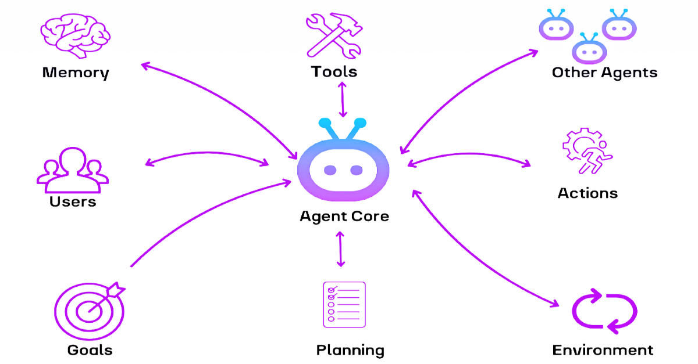

For a while now, organisations have been trying to modernise their data and AI capabilities, yet many either don't know where to start or still feel stuck in a cycle of pilots, POCs, and incremental improvements. As someone who has spent my career looking at what AI can do, helping improve understanding without buzzwords, and guiding enterprises through transformations, I've seen the same patterns — better models, improved speed of data pipelines, and moving to modern platforms. However, there is still a bottleneck in how much a human can do with their time.
That's why the shift toward AI agents and Agentic AI feels different. It's not just another technology wave — it's a structural change in how work gets done, improving efficiency within teams to free up their most valuable resources: time and creativity.
What we mean by AI agents

The true definition is: "AI agents are autonomous systems designed to perceive their environment, make decisions, and take actions to achieve specific goals."
But what does that really mean? AI agents are systems that don't just generate outputs — they act based on the information they have access to, just like we do. We're a way off an Artificial General Intelligence that can react to any situation like a human, but within a controlled, specific task, that's what an AI agent is trying to do.
How AI agents work
AI agents can be used to automate repetitive processes and integrate with other systems through APIs or Model Context Protocols (MCPs) — think of MCP like a USB for AI agents. This lets them interpret goals, break them into tasks, make decisions, learn from feedback, and operate either autonomously or semi-autonomously to solve or complete tasks.
This moves us beyond the current model of asking Copilot or ChatGPT to help with simple tasks. These agents can use LLM tools like Copilot and ChatGPT as part of a larger process to complete complex tasks.
What tasks can we use agents for currently?

Agents are being used across a variety of industries to solve the most time-consuming problems, such as:
- Healthcare: as a clinical assistant, to retrieve patient details, draft notes, or schedule appointments
- HR: writing job postings, scheduling interviews, and generating onboarding materials
- Manufacturing: estimating equipment repair needs from images, optimising delivery routes, detecting product defects
And much, much more. Going forward, the organisations that succeed won't be the ones with the most advanced models — they'll be the ones that understand how to embed agents into real processes, with guardrails, governance, and clarity of purpose, freeing up that all-important resource — time — for their teams to spend on creativity and innovation.
Agentic AI: the next evolution
Agentic AI takes this concept further. It's not just an agent performing tasks — it's an ecosystem of agents collaborating, reasoning, and working together to complete complex tasks.

Agentic AI systems don't just complete a single type of task; they coordinate multiple agents with different roles, update workflows dynamically, and re-evaluate their performance to make improvements. This isn't done by linking into a set of APIs or tools like a single agent, but by connecting to entire enterprise systems securely — which needs clear guidelines and governance, just like spinning up a new team in your business.
This is where work I've done on regulated industry AI safety, platform governance, and organisational capability becomes essential. Agentic AI isn't plug and play, and isn't something that someone who dabbles in Copilot or ChatGPT will be able to implement. It requires a clear understanding of what these systems can and can't interact with, who is responsible for their actions, and treating them like a member of the team — or a team in themselves. That starts with a clear architectural understanding of the system, monitoring in place to ensure decisions and actions are understood and appropriate, and transparency throughout the entire lifecycle of the system. Without these, Agentic AI becomes a risk. With them, it becomes a force to propel your business.
Why this matters now
There are three factors in play that make Agentic AI inevitable:
- The explosion of enterprise complexity. Teams are drowning in tools, data, and processes. Agents can orchestrate this complexity in a much faster way than humans are able to, giving back that time resource.
- The shift from AI as a feature to AI as a collaborator. We're moving from augmentation to delegation. This changes job design, workflows, and organisational structure.
- The maturity of the ecosystem. We now have foundation models capable of reasoning, frameworks like LangChain, MCP, and agent orchestration platforms, cloud-native architectures that support secure autonomy, and governance patterns that keep humans in control.
This is the moment where the technology, the tooling, and the organisational readiness finally align for the businesses that take the chance.
Architecting for autonomy

While at Cloud Formations, I've helped organisations move from aspiration to adoption. The biggest lesson is simple: Agentic AI succeeds when architecture, governance, and capability uplift move together.
In practice, that means designing agent ecosystems that are modular, observable, and governed, so they can be easily understood by users and audited if needed. It means increasing your teams' understanding so they can get the most out of the agents and feel comfortable using them — starting with safe sandboxes for experimentation and testing. It means ensuring your teams can work cross-functionally, since these systems are most effective when linked across multiple areas of the business rather than streamlining just bits and pieces. And it means translating complexity into clear, executive-ready narratives — if you're trying to get teams to use this, or executives to buy into it, you need to be clear about what these systems are doing and how.
Agentic AI isn't just a technical challenge. It's an organisational one, and that's where the real transformation happens.
What's next: from agents to autonomous enterprises
We're heading toward organisations where:
- Routine work is delegated to agents
- Humans focus on judgment, creativity, and strategy
- Systems self-optimise
- Governance is continuous and embedded
- AI becomes a core organisational capability, not a bolt-on
This isn't science fiction — it's already emerging in forward-thinking enterprises. The question isn't "Will we adopt Agentic AI?" It's "How quickly can we build the literacy, architecture, and governance to adopt it safely and effectively?" For leaders, architects, and practitioners, this is the moment to shape the future, not react to it.